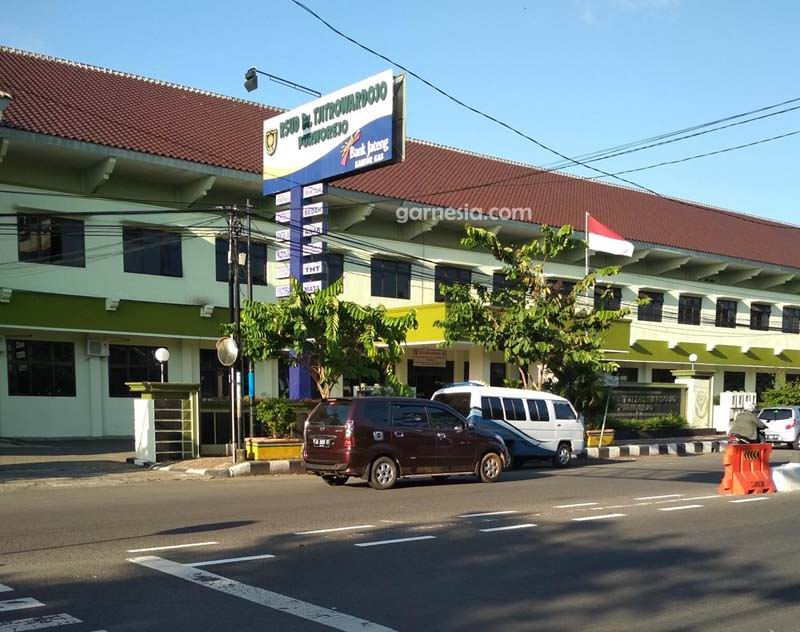

Peta interaktif pada WebGIS ini memungkinkan pengguna untuk mengakses informasi lokasi fasilitas kesehatan secara lebih mudah dan cepat. Setiap titik lokasi pada peta dilengkapi dengan atribut informasi yang memuat data penting seperti nama fasilitas kesehatan, jenis layanan, alamat, serta informasi tambahan yang relevan. Dengan adanya visualisasi spasial ini, masyarakat maupun pihak terkait dapat memperoleh gambaran yang lebih jelas mengenai distribusi fasilitas kesehatan di Kabupaten Purworejo. Selain sebagai media penyebaran informasi kepada masyarakat, WebGIS ini juga dapat dimanfaatkan sebagai alat pendukung dalam perencanaan dan pengambilan keputusan di bidang pelayanan kesehatan. Informasi spasial yang tersaji dapat membantu pemerintah daerah maupun instansi terkait dalam menganalisis pemerataan akses layanan kesehatan, mengidentifikasi wilayah yang masih kekurangan fasilitas kesehatan, serta merencanakan pengembangan layanan kesehatan di masa mendatang. Dengan memanfaatkan teknologi sistem informasi geografis berbasis web, WebGIS Fasilitas Kesehatan Kabupaten Purworejo diharapkan dapat meningkatkan transparansi informasi, mempermudah akses masyarakat terhadap layanan kesehatan, serta mendukung pengelolaan data spasial kesehatan secara lebih efektif dan terintegrasi.
